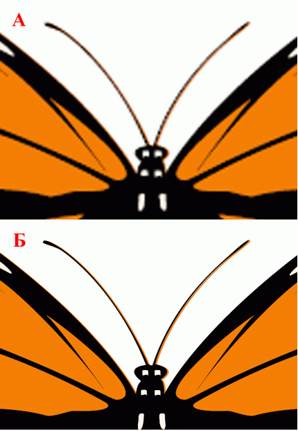

SVG (Scalable Vector Graphics, в переводе масштабируемая векторная графика) - это язык для описания двухмерной графики в формате XML. https://svg-art.ru/ и др. Можно сказать, что SVG – это HTML для графики. Он включает в себя несколько типов различных объектов: • векторную графику (линии, окружности, кривые) • текст (с форматированием, заданием стилей и эффектов) • растровые изображения (внедряемые в SVG–документ). Графические возможности языка чрезвычайно велики и сравнимы с возможностями пакетов Corel Draw и Adobe Illustrator: • произвольные заливки, штриховки, градиенты, заливки заданным растром, а также произвольным фрагментом векторного изображения, • разнообразные стили линий - линии произвольной толщины, штриховые, с различными стилями угловых и конечных точек, • возможность использования кривых Безье (кубических и квадратичных), • поддержка прозрачности всего изображения или его части, с заданной степенью, • возможность применения фильтров, типичных для растровой графики – размытие, попиксельное смешивание, наложение, • поддержка Unicode – возможность отображения в одном SVG документе текстов на различных языках и различными шрифтами, • расположение текстовых строк вдоль произвольных кривых, • встроенные развитые средства анимации, позволяющие без программирования в режиме реального времени менять практически все атрибуты изображения или его фрагмента, • встроенные средства для создания интерактивности, а также поддержка JavaScript и DOM, • поддержка каскадных таблиц стилей (CSS), • поддержка антиалиасинга. Название "масштабируемая векторная графика" отражает следующие превосходства языка: • SVG–документы могут быть отображены на самых различных устройствах – от экранов мобильных телефонов и карманных компьютеров(рис. 1.1) до мониторов PC и ноутбуков. • SVG–документы представляются в векторном формате, следовательно, их можно масштабировать без потери качества по сравнению с растровыми изображениями (рис. 1.2). Этот эффект называется пиксилизация. • SVG–графика может быть создана "на лету" при помощи любого языка программирования (Javascript, Java или C#) и возможно управление видом этой графики в режиме работы приложения.
Рис. 1.1. Иконка в формате SVG
Рис. 1.2. Увеличенный фрагмент растрового (А) и векторного SVG (Б) изображений. У растрового изображения заметна "зазубренная" структура
Объектная модель SVG документа основана на принятом консорциумом W3C в 2000 году стандарте DOM (Document Object Model) Level-2. Это дает возможность использования стандартных языков для начального построения и произвольного манипулирования любыми элементами изображения. Составной частью стандарта SVG является модель событий, позволяющая привязать произвольный сценарий к любому фрагменту SVG документа и достаточно легко реализовывать интерактивные графические изображения. SVG разрабатывается консорциумом W3C при поддержке таких крупных компаний, как Microsoft, Adobe, Corel, IBM, Hewlett-Packard, Sun Microsystems, Canon, Kodak и многих других (всего более двадцати). От их совместных усилий зависят стандартизация многих деталей языка, а также скорость его создания. Стандарт SVG 1.0 был принят в качестве спецификации консорциумом в сентябре 2001 г. Стандарт SVG 1.1 (http://www.w3.org/TR/SVG/) и его версии SVG mobile profiles (http://www.w3.org/TR/SVGMobile/) (SVG Basic and SVG Tiny) были приняты консорциумом в качестве рекомендации в январе 2003 г. Ведутся работы по созданию стандарта SVG 2, который сейчас имеет статус черновика. Эта версия языка будет содержать ряд новых свойств. Редакторы SVG: GIMP, Inscape, Adobe Illustrator и CorelDRAW и др. Online: Janvas (под Сhrome), SVG-Edit, DrawSVG и др. Высококачественные сложные векторные документы Высококачественные сложные векторные документы подходили и будут подходить для SVG по двум основным причинам. Существует достаточно много документов с высокой степенью детализации, включая документы, создаваемые с помощью программ автоматизированного проектирования, для которых scalable часть SVG обеспечивает подробное представление как изолированных документов, так и документов, встроенных в веб-страницы. Эта технология также подходит для высококачественной печати. Декларативный характер SVG позволяет обрабатывать или создавать фигуры из баз данных на стороне клиента или сервера. Кроме того, переход в направлении от рекомендательного к обязательному характеру использования SVG поддерживается на правительственном уровне из-за инженерных схем (патенты) или промышленных схем (градостроительное проектирование). Эта тенденция будет продолжаться, поскольку при выборе поставщиков систем электронного документооборота органы государственной власти отдают предпочтение то одному поставщику, то другому. К этим документам относятся следующие: • Строительные, инженерные и планировочные схемы • Электрические, аэронавигационные и схематические чертежи • Организационные диаграммы • Карты • Биологические диаграммы Можно конвертировать файлы Автокад DWG, DXF в SVG и обратно.
| Canvas | SVG |
| Высокая производительность при отрисовке любых 2D объектов. | Нет зависимости от разрешения — SVG лучше подходит для кроссплатформенных пользовательских интерфейсов, так как позволяет масштабировать изображение при различных разрешениях экрана. |
| Стабильная производительность — всё есть пиксель. Производительность падает только при увеличении разрешения изображения. | SVG очень хорошо поддерживает анимацию. Элементы могут быть анимированы с использованием описательного синтаксиса или с помощью JavaScript. |
| Нет зависимости от разрешения — SVG лучше подходит для кроссплатформенных пользовательских интерфейсов, так как позволяет масштабировать изображение при различных разрешениях экрана. | SVG очень хорошо поддерживает анимацию. Элементы могут быть анимированы с использованием описательного синтаксиса или с помощью JavaScript. |
| Можно сохранить полученное изображение в PNG или JPG файл. | Можно получить полный контроль над каждым элементом, используя SVG DOM API в JavaScript. |
| Лучше всего подходит для создания растровой графики (например, в играх, фракталов и т.п.), редактирования изображений и операций, требующих манипулирования на уровне пикселей. | SVG хранится в формате XML, что предоставляет больше возможностей браузерам по обеспечению доступности SVG документов по сравнению с элементом canvas. Таким образом, SVG выглядит лучшим решением для пользовательских интерфейсов веб-приложений |
| Canvas | SVG |
| Отрисовка основана на пикселях. | Низкая скорость рендеринга при увеличении сложности документа (рисунка), так как используется модель DOM |
| Не существует API для анимации. Вам придется прибегать к использованию таймеров и других событий для обновления канвы. | Скорее всего, SVG не подходит для таких приложений как игры. Возможно лучшим выбором будет комбинация HTML Canvas + SVG |
| Возможно, не самый лучший выбор, когда доступность имеет решающее значение. Канва предоставляет вам поверхность для рисования в выбранном контексте (2D и 3D). Можно указать альтернативный контент внутри элемента canvas, который будет показан браузером при невозможности отображения графики. Кроме того, вы можете выполнить проверку доступности выбранного Canvas API с помощью JavaScript. На основе этого вы можете обеспечить различную функциональность для пользователей браузеров с разной поддержкой HTML 5 Canvas. | |
| HTML 5 Canvas не подходит для создания веб-сайтов или интерфейсов веб-приложений, так как пользовательские интерфейсы обычно должны быть динамическими и интерактивными, а Canvas требует от вас постоянной перерисовки каждого элемента в интерфейсе. | |
| Лучше всего подходит для создания растровой графики (например, в играх, фракталов и т.п.), редактирования изображений и операций, требующих манипулирования на уровне пикселей. |